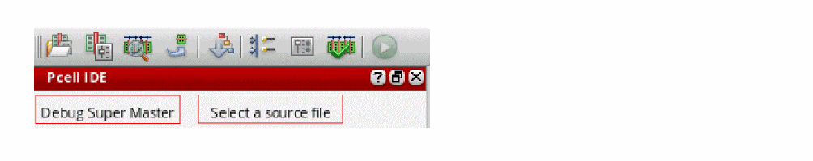

7
Debugging SKILL Pcells
The Pcell IDE application is available in the Launch menu of VLS, VSE, and VSE-Symbol editor windows. The Pcell IDE assistant is displayed to the left of the design display area in the layout or schematic window. You can use the Pcell IDE window to view Pcell attributes and connectivity information while the Pcell is being debugged.
Using Pcell IDE you can debug Pcell supermaster, instances, and abutment.
Working with Pcell IDE
Debugging a Pcell is an iterative process. So, you can specify different parameters or select different Pcell supermaster at the end of the Pcell evaluation to start a new iteration. A Pcell is composed by multiple SKILL functions contained in multiple SKILL files. The file that contains the pcDefinePCell function call is the Pcell definition file. All other files are the Pcell support files.
To debug a Pcell using Pcell IDE requires the Pcell Support files to be loaded. Typically, the Pcell Support files are loaded through the libInit.il file. It is recommended to load the Pcell Definition file from the Pcell IDE assistant. You can also load this file from the SKILL IDE window but this is no longer the recommended method.
After the Pcell Definition file is loaded, you can specify the appropriate Pcell parameters to be evaluated and the necessary breakpoints in the IDE source window so that the intermediate Pcell evaluation result can be examined. You can also select the graphical shape in the window that displays the Pcell supermaster or submaster contents to lookup the source code that generated the selected shape.
Open the Pcell IDE Window
To open Pcell IDE, select Launch – Pcell IDE from any VLS, VSE, or VSE Symbol editor windows.
The Work Pad area of the Pcell IDE window displays the following information:
- The text in the top left corner shows the current active command.
-
The text in the top right corner shows either the current status or prompt of IDE.
Only one Pcell IDE session is supported at a time. If you launch Pcell IDE while one is already active in another window, the following dialog box is displayed.
Automatically Install Debug CDF Plugin
The Debug CDF assistant is opened automatically by the Pcell IDE through the default Pcell IDE workspace. The Debug CDF assistant is placed on the second tab of the Pcell IDE assistant window. Once you launch the Pcell IDE window, the Launch — Plugins — Debug CDF option is checked.
However, once you exit Pcell IDE, the Launch — Plugins — Debug CDF option will be unchecked.
Pcell IDE Window Toolbar
Commands on the Pcell IDE window toolbar are grouped as follows, based on the functionality the commands provide:
In addition, the Run command is also available on the toolbar.
xyz window. Now, after you execute the various debug commands, additional windows can be opened by Pcell IDE. However, if you close those additional windows, the Pcell IDE does not terminate.
Now, to terminate Pcell IDE you either need to launch another application from the xyz window or close the xyz window. As Pcell IDE exits, if any additional windows are opened then they will be closed by Pcell IDE as a part of the exit clean up process.
Also, notice that the Launch menu entries from those additional windows will be disabled.Description
The following is a brief description of the available commands.
You use the Debug Super Master command to step through the evaluation of the Pcell supermaster. Using this command an empty (read-only) cellview gets created when you specify the source file with the pcDefinePcell function. Once the evaluation is completed, the shapes according to the Pcell default values are drawn in the cellview. This command enables you to resolve the Pcell source code errors.
You use Debug Instance command to directly debug a selected instance’s submaster without leaving the design area. After a proper instance is selected, the parameters are updated according to the selected instance’s parameters values.
You use the Debug Abutment command to simulate the Pcell abutment without using the connectivity engine of VLS XL and execute the user-defined abutment functions.
You use the Publish command to update or redefine original Pcell supermaster from Pcell IDE after the debug operation is completed.
You use the Debug Hier Mode command enables you to debug supermaster or instances at all displayed hierarchy levels.
You use the Show Connectivity command to view the Pcell instance’s connectivity model. This command displays the status of each terminal as weak connect, strong connect, or must connect. In addition, you use this command to view the information and properties for each terminal and pin figures.
You can use the Check Parameter command to display the selected Pcell instance’s parameter name, type, default value, and instance value.
You can use the Check Abutment command to analyze the abutment information that is stored in the database.
You use the Run command to start debugging a Pcell. After you setup the parameter values, the Run icon is enabled. You can start another evaluation by selecting the Run icon again at the end of the evaluation process. This Run icon is disabled in any of the following conditions:
- During Pcell evaluation.
- If supermaster source code is not loaded.
- If you have selected any of the non-debugging commands.
Debugging Pcell Supermaster
To debug Pcell supermaster, you need to perform the following steps:
-
Click Debug Super Master icon from the toolbar
-
The fields related to debug supermaster are displayed in the Work Pad area. Once you specify the source file with the
pcDefinePcellfunction, a new layout named<lib> <supermasterCellName> "layout_DBG"is opened. This cellview is deleted once the Pcell IDE session is terminated. - From the Source File drop-down menu, select the Pcell definition file you need to debug.
-
Select the Call Pcell definition function check box and add the procedure name in the text box.
-
Click the Evaluate button. It creates a temporary cellview,
<lib> <pcellName> "layout_DBG". - The Run icon gets enabled on the Pcell IDE toolbar. Click the Run icon to start the evaluation process.
-
Once you click the Run icon, Pcell IDE sets an initial breakpoint at the first line of the source code body before starting the Pcell evaluation.If
pcDefinePcellis specified inside a procedure, then you would have to call that procedure in CIW and click the Evaluate button to start the debugging process. Otherwise, the debugging process will start automatically.If there are multiplepcDefinePcellspecified inside a procedure, then multiple empty cellview windows will be displayed. Each empty cellview window is associated to its corresponding debugged Pcell supermaster. You can select the desired cellview tab window that needs to be debugged and then click the Pcell IDE's Run icon to start debugging the selected Pcell supermaster. -
The SKILL code corresponding to the supermaster is displayed in the SKILL IDE window. Set breakpoints and walk through the code using the Next, Step, and Continue icons.
-
On the SKILL IDE window, click the Step icon to step through the Pcell source code. The geometry is incrementally updated and the Pcell supermaster is displayed in the layout window.
-
After the evaluation is successfully completed, the Pcell default parameters are displayed in the Pcell IDE assistant. However, these parameters are not editable.
After Pcell evaluation you can select shapes in the graphic window to view the corresponding code in the SKILL IDE window.
Debugging CDF
Debug CDF is a plugin that is used to debug CDF callback procedures using simple SKILL expressions for form initialization (forminit), form completion (doneProc), and any parameter field value modification (parameter callbacks).
- Is available in Pcell IDE, Schematic, and Layout applications.
- Is installed automatically by Pcell IDE through the default Pcell IDE workspaces.
- Creates the Debug CDF assistant that allows you to select CDF callbacks for debugging.
For more information on debugging CDF, refer to the
You can also view the parameter definition as a tooltip by pointing on a parameter name in the Debug CDF assistant, as shown below.
Debugging Pcell Instances
To debug Pcell instances, you need to perform the following steps:
-
Click Debug Instance icon from the Pcell IDE toolbar.
In the Debug Instance form, the Select Inst Only check box is selected by default. When it is set, you can only select instances. This feature allows you to select the desired instance for debugging. You can debug an instance from any of the displayed hierarchical levels. However, you must select only one instance at a time for debugging. Before you run the Debug Instance command, you can select an instance or any object. If the preselected object is a Pcell instance, its parameters will be displayed accordingly.
-
From the Source File drop-down menu, select the Pcell definition file you need to debug.
If the Pcell source of the selected instance is not loaded, then you cannot start the debugging process. In addition, the error message will be displayed (as shown in the figure below) if the source file does not match with the supermaster.
-
Next, you need to select an instance to load the supermaster.
-
Select the Call Pcell definition function check box and add the procedure name in the text box.
-
Click the Evaluate button. This allows Pcell IDE to confirm if the Pcell source file and the selected Pcell instance are matching.
After an instance is selected and its Pcell source code is loaded, the Run icon gets enabled. Once you click the Run icon, the Select Inst Only check box is deselected, which allows you to select any object during Pcell evaluation for cross highlight purpose. However, after a Pcell evaluation is complete, the Select Inst Only check box is selected again.
You can deselect the Select Inst Only check box anytime to perform cross highlight between object and source code.You can choose to ignore the CDF values using the Ignore CDF check box or modify any of the parameter values.You can click the Reset button to reset the parameter values to the last instance parameter values. If the current instance had been re-evaluated, Pcell IDE remembers the new set of parameter values. Therefore, after modifying the parameter values, you can always restore the original instance’s settings. However, this is different from the Defaults button, which sets all the parameter values to their default values.
-
The SKILL code corresponding to the supermaster is displayed in the SKILL IDE window. Set breakpoints and walk through the code using the Next, Step, and Continue icons.
- The Run icon gets enabled on the Pcell IDE toolbar. Click the Run icon to start the evaluation process.
-
On the SKILL IDE window, click the Step icon to step through the Pcell source code. The graphic is incrementally updated and the Pcell submaster is displayed in the layout window.
-
After Pcell evaluation you can select shapes in the graphic window to view the corresponding code in the SKILL IDE window.
In addition, if a database shape object is referenced by multiple source lines, then you can use the Cross Highlight toolbar to visit all the source lines where this object was created and modified. To view the Cross Highlight toolbar, you need to right-click the toolbar area and then select the Cross Highlight option from the context-sensitive menu, as shown below.
The Cross Highlight toolbar will be displayed, as shown below.

Alternatively, to view the source code of an object, which is scattered at multiple locations, you can right-click the object and select appropriate options from the context-sensitive menu, as shown below.
Publish Command
The Publish command allows you to update the original Pcell supermaster view directly from Pcell IDE after the debug operation is complete. Earlier, to fix a bug or to enhance some functionality, you had to modify the Pcell source file during the debug operation. To do this, you were required to save the Pcell source file, and then load it in CIW to regenerate the Pcell supermaster.
Now you can update or redefine the original Pcell supermaster from Pcell IDE by using the Publish command. The Publish button is disabled by default on the Pcell IDE toolbar, and it gets enabled after the first Pcell debug session. After you click the Publish button, the Publish Pcells dialog box is displayed, as shown below.
This dialog box lists the following categories (expandable) and buttons:
Publishing – Lists Pcells that are ready to be published.
Timestamp – Lists Pcells that have timestamp violation. Their original supermaster cellviews are newer than the debugged ones. They are published after user confirmation.
ReadOnly – Lists the original Pcell supermaster cellviews that are not writable, and therefore cannot be published.
Locked – Lists the original Pcell supermaster cellviews that are locked, and therefore cannot be published.
Publish button – Regenerates the selected supermasters.
Cancel button – Cancels the Publish command.
Help button – Opens the help documentation in this area.
pcDefinePCell() or pcGenCell() function.Debug Hier Mode Command
You can also debug supermaster or instances at all displayed hierarchy levels. To do this:
- You need to click the Debug Hier Mode icon from the Pcell IDE assistant toolbar.
- Now, once you click the Continue icon on the SKILL IDE window.
-
On the Pcell IDE assistant, the Evaluating Pcell message is displayed.
- You again need to click the Continue icon from the SKILL IDE toolbar to complete the Pcell evaluation process.
Pcell Evaluation Message
When you debug a Pcell design using either the Debug Super Master or Debug Instance command, the following Pcell evaluation message will be displayed in CIW:
Evaluating Pcell - (libName cellName viewName)
Pcell Evaluation Succeeded - (libName cellName viewName)
Pcell Evaluation Failed - (libName cellName viewName)
Evaluating Pcell - Instance | P0 (libName cellName viewName)
Pcell Evaluation Succeeded - Instance | P0 (libName cellName viewName)
Pcell Evaluation Failed - Instance | P0 (libName cellName viewName)
Environment Variable
cdba dbLogPcellWarnings boolean t
This environment variable allows you to redirect warning messages, which are generated during the Pcell evaluation, in the /tmp directory.
By default, only the error messages are redirected to the pcell error log file. However, when this environment variable is set to true, warning messages are also redirected to the pcell error log file.
Supported and Not Supported Pcell Instances
A list of supported and not supported Pcell instances is illustrated in the table below:
| Supported Pcell Instances | Not Supported Pcells Instances |
|---|---|
Viewing Pcell Connectivity Model
The Show Connectivity command allows you to view the Pcell instance’s connectivity model. This command is supported only for the top level design.
The Work Pad area for this command consists of the list of current editing cellview’s of Pcell instances in a tree structure. Each instance’s terminals are listed under the instance level and each terminal pins are listed under each terminal level.
The Work Pad area of this command consists of the following options:
-
Highlight ‘Must Connect’ Terminals: You can use this option to highlight the “must connect” terminals, if applicable, of the selected terminal. If the Highlight ‘Must Connect’ Terminals check box is not selected, then only the selected terminal will be highlighted in yellow, as shown in the figure below.
However, If you select the Highlight ‘Must Connect’ Terminals check box, then all must connect terminals of the selected terminal gets highlighted in different colors, as shown in the figure below.
In addition, when the terminal is a “weak connect”, a resistor is drawn between the pins. However, If it is a “strong connect”, then a straight line is drawn between the pins, as shown in the figure below.
If you select a terminal pin from the instance tree, the corresponding terminal pin in the cellview is highlighted in blue. Also, the pin information is displayed in the Information area, as shown in the figure below.

-
Show ‘Physical Only’ Terminals: You can use this option to view the list of logical terminals or all terminals including terminals with the “physical only” (
physOnly) database attribute set for each instance. As shown in Figure 1, only logical terminals are listed underI2with this check box is not selected. However, the “physical only” attributes are added to the list if this check box is selected, as shown in the Figure 2. - Zoom To Selected Inst: You can use this option to zoom in the selected instance or view the entire cellview.
Checking Pcell Parameters
The Check Parameter command allows you to display the selected instance’s Pcell parameters, such as parameter name, type, default value, and instance value.
In addition, you can use any of the following options to categorically display the list of the selected Pcell instance’s parameter.
- All: You can use this option to display all parameters of the selected instance.
- Overrides: You can use this option to display the parameters whose value has been overridden on the instance.
- Inconsistent: You can use this option to display the parameters that have the inconsistency between its default value and CDF default value (if applicable).
Correcting and Updating Pcell Source
You can update the Pcell Source either from within the SKILL IDE source panel or from an external text editor. The updated source should then be loaded in SKILL IDE for it to be available for Pcell IDE. After you load the Pcell Source, the Debug Pcell form is displayed. To repeat the debugging process, you need to follow the procedure as described above.
Restarting a Debugging Process
After the debugging process is completed, you can restart the debugging process by reloading a pre-loaded or a new Pcell Definition file. To restart a debugging process, the following options are available:
- You can restart the last evaluation with no change to the setup.
- You can modify parameter values for the same supermaster.
- You can select a new supermaster and set its parameter values.
Debugging Pcells Abutment
Abutment allows cells to be automatically overlapped, aligned, and electrically connected without introducing a design rule violation or connectivity error. Abutment reduces both the area occupied by a circuit and the length of the interconnect wiring. You can use abutment during interactive layout generation. Debug abutment is available as a plugin in VLS XL and is also integrated with Pcell IDE.
In VLS XL, when a command triggers device abutment, it leads to a debug abutment session. It allows you to debug all the events in VLS XL, VLS GXL (in IC6,1.8) and VLS EXL (in ICADVM18.1). The Debug Abutment plugin is launched as an assistant that allows you to specify a set of events as breakpoints in a user-defined abutment function.
For more information on debug abutment in VLS XL, refer to the Debugging Abutment section in Virtuoso Layout Suite XL User Guide.
The debug abutment feature is integrated with Pcell IDE, which enables you to simulate the Pcell abutment without using the connectivity engine of VLS XL and execute the user-defined abutment functions. In addition, it allows you to debug Pcell evaluation that is triggered by the code that modifies the Pcell parameter inside the Pcell abutment function.
Debug Abutment Form
This functionality provides you with the ability to debug abutment using the Pcell IDE window. To do this, once you open the Pcell IDE window, you need to click the Debug Abutment icon from the Pcell IDE toolbar. The Debug Abutment form will be displayed.
Using this functionality, Pcell IDE will trigger the abutment function when the basic requirements, such as abut class and abut figures’ layers for abutment, are met.
Debugging Pcell Abutment using Pcell IDE
To debug Pcell abutment, you need to perform the following steps:
-
From the Action section, choose any of the following options:
- Abut – The abut simulator starts the abutment simulation. Debugging can be performed using the available abutment events.
- Un-abut – The abut simulator starts the un-abutment simulation. Once you select this option, all the check boxes under the Event section will be disabled and the Un-abutment (event 3) check box will be selected automatically. This is because the simulator will issue only the un-abutment event.
- Non-Abut – The abut simulator starts the non-abutment simulation. Once you select this option, all the check boxes under the Event section will be disabled and the Non-Abutment (event 4) check box will be selected automatically. This is because the simulator will issue only the non-abutment event.
-
From the Event section, choose a set of events:
- Pre-Process (Event 5): Pre-processes Pcells with Advance Node technology. This event is disabled when Pcells are not using the Advance Node technology. (ICADVM18.1 only)
- Adjust Parameters (Event 2): Adjusts Pcell parameters for abutment.
- Calculate Spacing (Event 1): Calculates the offset between two abutted Pcells.
- Un-abutment (Event 3): Adjusts Pcell parameters to unabut Pcells.
- Non-Abutment (Event 4): Computes the spacing between cells that cannot abut. Click the Select button corresponding to Moving Instance and then select the moving Pcell instance from the layout area. The selected moving instance will be highlighted in the layout area.
- The abut figure names associated with the selected moving instance are listed in the Abut Name drop-down list. Select the appropriate abut name and direction from the Abut Name and Abut Direction drop-down list respectively.
- Similarly, click the Select button corresponding to Anchor Instance and then select the anchor Pcell instance from the layout area. The selected moving and anchored instances are highlighted in the layout area.
-
The abut figure names associated with the selected moving instance are listed in the Abut Name drop-down list. Select the appropriate abut name from the Abut Name drop-down list, as shown in the figure below.
- Choose the abutment contact connection type from the Contact Connection drop-down list. It contains the following options:
-
Now, click the Run
 icon from the Pcell IDE toolbar to start the debugging process.
icon from the Pcell IDE toolbar to start the debugging process. -
The corresponding Abutment function code is displayed in the SKILL IDE window. You can walk through the code using the Next, Step, and Continue icons, as shown below.
- After the debugging process is completed, the debug summary is displayed in the Pcell IDE window.
As shown in the figure above, the result of each event is displayed in the Simulation Result Area of the Pcell IDE window. The green check mark icon indicates that the result of an event is true. Whereas, the red cross icon indicates that the result of an event is false.
-
After the Adjust Parameters event is completed, the modified parameter is displayed with its old value,
3and the new value,2. - After the Calculate Spacing event is completed, the calculated space value is displayed.
dbReplaceProp, dbReplacePropList, dbDeletePropByName, or dbReplaceInstParamList is called.Check Abutment Command
The Check Abutment command enables you to analyze the abutment information that is stored in the database. To open the Check Abutment window, you need to select the Check Abutment icon on the Pcell IDE toolbar.

You can select the specific instance to view its abutment information, such as the abut pin/figures information, as shown below.
Notice that the following abutment attributes are listed in the Check Abutment window.
- layer
- abutAccessDir
- abutClass
- abutFunction
- abutOffset
- lxAutoAbut
- lxAutoSpace
- permuteRule
- vxlInstSpacingDir
- vxlInstSpacingRule
Once you select any of the instances, the corresponding instance will be highlighted and displayed in the layout area, as shown below.
Similarly, when you select any instance in the layout area, the corresponding instance name will be selected in the Pcell IDE window.
Undefined in the Value column.Bindkey Editor
Pcell IDE has three sets of Bindkeys defined for the three Pcell IDE sub-applications, which includes PcellIDE Layout, PcellIDE Schematic, and PcellIDE Symbol. Therefore, in the Bindkey Editor, it shows these three sub-applications at the root level, as shown below.
Return to top